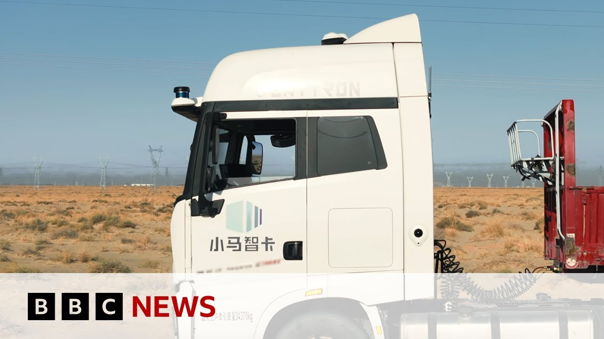

【中国推出自动驾驶卡车车队 | BBC新闻】
Summary: China is testing self-driving trucks on supervised routes, with smaller delivery vans already operating alongside human-driven vehicles.
摘要： 中国正在特定路线上测试自动驾驶卡车，小型无人配送车已与人工驾驶车辆共同上路。

⏱️ Estimated Reading Time: 4 min
📚 高考3500生词 📚 雅思生词 📚 托福生词 📚 GRE生词 📚 UP主推荐生词
The idea of a large truck barreling down the highway carrying a heavy load and without a driver's hands on the steering wheel may seem strange and even frightening to some.
一辆载着重物的大型卡车在高速公路上疾驰，方向盘后却没有司机，这对一些人来说可能显得奇怪甚至可怕。
Well, in China, that is exactly what's now being tested.
而在中国，这正是目前测试的内容。
Along certain routes, driverless lorries are being allowed to operate under supervision.
在特定路线上，无人驾驶卡车被允许在监督下运行。
When it comes to smaller delivery vans, they're already sharing the streets with human controlled vehicles.
至于小型无人配送车，它们已与人工驾驶车辆共享道路。
Our China correspondent Steven McDonald reports.
本台驻华记者史蒂文·麦克唐纳报道。
These trucks are driving on a public road without a human being behind the wheel.
这些卡车正在公共道路上行驶，驾驶座上空无一人。
Driverless transport company Pony AI was given official permission to film a video showing just what its technology can do.
无人驾驶运输公司小马智行获官方许可拍摄视频展示其技术能力。
Now it's running a pilot program making deliveries from Beijing to Tangin Port, which the company showed to the BBC.
目前该公司正运行从北京到天津港的试点配送项目，并向BBC展示了这一项目。
So here we have one of these self-driving trucks from the outside.
现在我们看到其中一辆自动驾驶卡车的外部。
It looks like a normal truck.
它看起来像普通卡车。
Let's have a look.
让我们看看。
Hey, [Laughter] the normal runs involve a safety driver ready to take over in an emergency.
嘿，（笑声）常规运行时配有安全驾驶员以备紧急接管。
So, here we are.
好了，我们出发了。
We're racing down the freeway.
我们正沿高速公路疾驰。
And I've got to say, it's pretty weird because you look over, there's the driver.
不得不说这很奇特，因为你看过去，驾驶员就在那儿。
His hands are off the steering wheel.
他的双手却离开了方向盘。
Of course, I was a bit scared the first time in an autonomous truck, but after spending a lot of time testing them, I think they are pretty good and safe.
当然，第一次乘坐自动驾驶卡车时我有点害怕，但经过大量测试后，我认为它们相当可靠且安全。
I asked how the truck's sensors work.
我询问了卡车的传感器工作原理。
This is our main sensor.
这是我们的主传感器。
It uses lasers which can reach a long way.
它使用可远距离探测的激光。
There are also cameras which can track in multiple directions to detect blind spots.
还有可多方向追踪的摄像头来检测盲区。
These test vehicles are running daily limited routes.
这些测试车辆每日在限定路线上运行。
But elsewhere, much smaller trucks have already been cleared to operate freely on suburban streets.
但在其他地区，更小型卡车已获准在郊区街道自由行驶。
In the eastern city of Herfe, Rhino Aai is taking parcels from big distribution hubs run by Kouer companies to neighborhood stations where scooter drivers then drop packages to the front door.
在东部城市合肥，犀牛智运正将包裹从由某快递公司运营的大型配送中心运至社区站点，再由骑手配送到户。
We're told delivery companies can hire three robot vans for the same cost as one driver's salary.
据悉，物流公司雇佣三辆机器人货车的成本仅相当于一名司机的薪资。
The driverless vehicle industry is growing really, really quickly.
无人驾驶车辆行业正飞速发展。
Apart from express delivery companies, our customers include supermarkets, hospitals, and universities.
除快递公司外，我们的客户还包括超市、医院和高校。
Worldwide, much has to be done to convince the public that it's safe to allow powerful, heavy trucks on normal streets without a driver.
全球范围内仍需努力说服公众允许无人的重型卡车上路是安全的。
But in China at least, analysts say this could be widespread within years rather than decades.
但分析师表示，至少在中国，这可能在数年内而非数十年内普及。
Steven McDonald, BBC News, Beijing.
BBC新闻，史蒂文·麦克唐纳于北京报道。